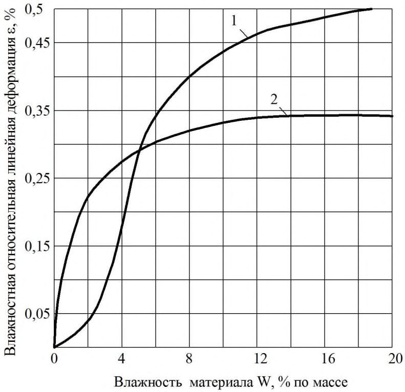
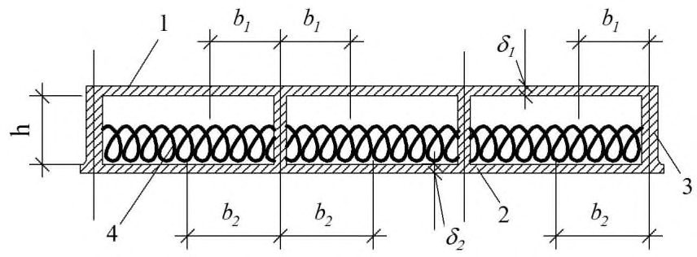
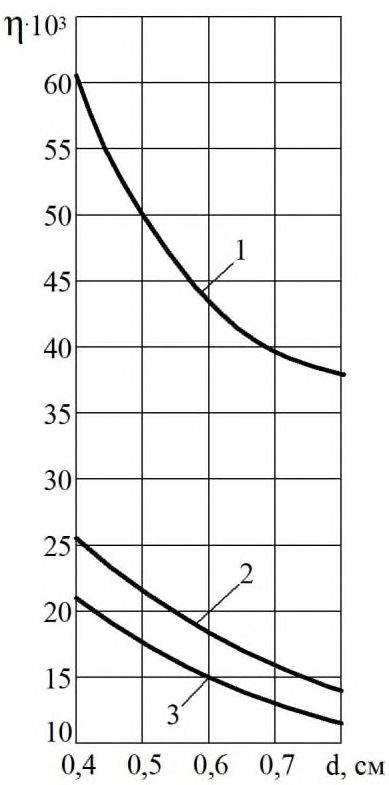
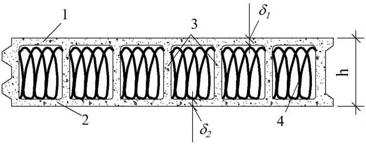
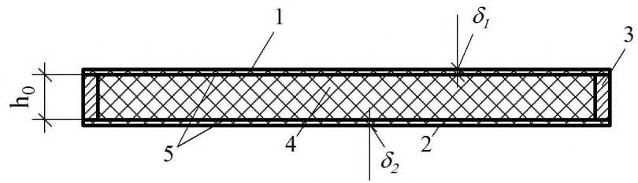
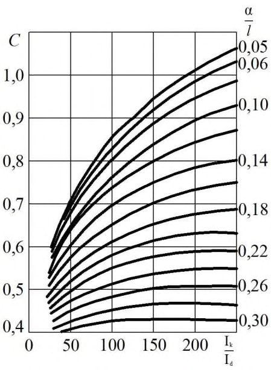
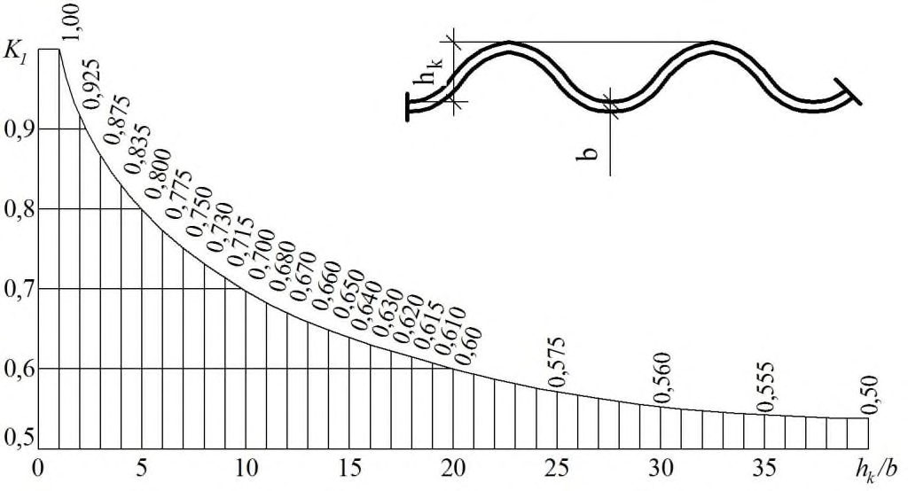
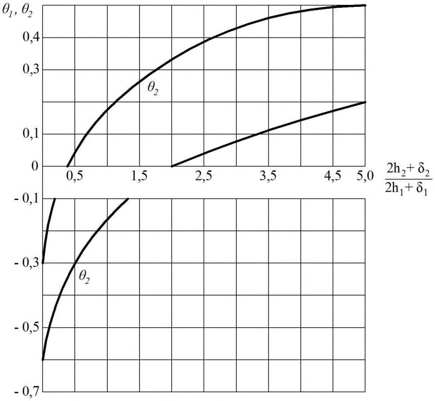
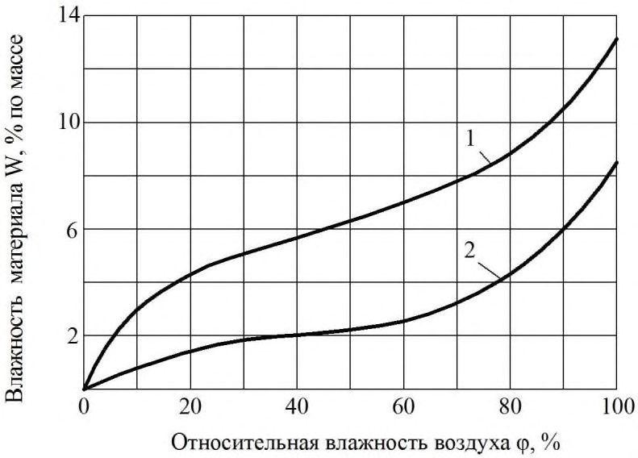
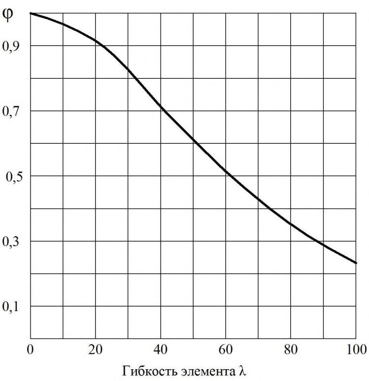

СП 97.13330.2016 «Асбестоцементные конструкции»
О документе: разработчики, утверждение, регистрация, ключевые слова
СП 97.13330.2016
1 ИСПОЛНИТЕЛИ -Федеральное государственное бюджетное образовательное учреждение высшего образования «Национальный исследовательский Московский государственный строительный университет» (НИУ МГСУ) при участии ассоциации «Железобетон»
2 ВНЕСЕН Техническим комитетом по стандартизации ТК 465 «Строительство»
3 ПОДГОТОВЛЕН к утверждению Департаментом градостроительной деятельности и архитектуры Министерства строительства и жилищнокоммунального хозяйства Российской Федерации (Минстрой России)
4 УТВЕРЖДЕН приказом Министерства строительства и жилищнокоммунального хозяйства Российской Федерации от 18 ноября 2016 г. № 819/пр и введен в действие с 19 мая 2017 г.
5 ЗАРЕГИСТРИРОВАН Федеральным агентством по техническому регулированию и метрологии (Росстандарт). Пересмотр СП 97.13330.2011 «СНиП 2.03.09-85 Асбестоцементные конструкции»
В случае пересмотра (замены) или отмены настоящего свода правил соответствующее уведомление будет опубликовано в установленном порядке. Соответствующая информация, уведомление и тексты размещаются также в информационной системе общего пользования - на официальном сайте разработчика (Минстрой России) в сети Интернет
© Минcтрой России, 2016
Настоящий нормативный документ не может быть полностью или частично воспроизведен, тиражирован и распространен в качестве официального издания на территории Российской Федерации без разрешения Минстроя России
СП 97.13330.2016
Дата введения 2017-05-19
УДК 691.328.5 ОКС91.080.99
Ключевые слова: асбестоцементные конструкции, мелкозернистый бетон, арматура, расчетные значения, прочностные характеристики бетона, требования к арматуре, расчет по прочности, расчет по образованию трещин и расчет по деформациям, расчет клеевых соединений асбестоцемента
Директор НИИСФ РААСН \_\_\_\_\_\_\_\_\_\_\_\_\_\_\_\_\_ И.Л. Шубин
Руководитель организации-разработчика
Проректор НИУ МГСУ \_\_\_\_\_\_\_\_\_\_\_\_\_\_\_\_\_\_А.П. Пустовгар
Руководительразработки Зав. кафедрой ТВВиБ, НИУ МГСУ \_\_\_\_\_\_\_\_\_\_\_\_\_\_\_\_\_\_Ю.М. Баженов
Исполнитель
Доцент кафедры ТВВиБ, НИУ МГСУ \_\_\_\_\_\_\_\_\_\_\_\_\_\_\_\_\_\_В.Г. Соловьев
Введение
Настоящий свод правил разработан с учетом обязательных требований, установленных в Федеральных законах от 27 декабря 2002 г. № 184-ФЗ «О техническом регулировании», от 30 декабря 2009 г. № 384-ФЗ «Технический регламент о безопасности зданий и сооружений».
Свод правил разработан авторским коллективом Федерального государственного бюджетного образовательного учреждения высшего образования «Национальный исследовательский Московский государственный строительный университет» (профессор, д-р техн. наук Ю.М. Баженов, профессор, д-р техн. наук В.Ф. Степанова, канд. хим. наук В.Р. Фаликман, канд. техн. наук В.Г. Соловьев ) при участии ассоциации «Железобетон» (профессор, д-р техн. наук А.И. Звездов , канд. техн. наук Б.С. Соколов, Д.В. Пасхин ).
1Область применения
Настоящий свод правил устанавливает общие правила проектирования асбестоцементных конструкций.
2Нормативные ссылки
В настоящем своде правил использованы нормативные ссылки на следующие документы:
ГОСТ 12.1.005-88 Система стандартов безопасности труда. Общие санитарногигиенические требования к воздуху рабочей зоны
ГОСТ 6266-97 Листы гипсокартонные. Технические условия
ГОСТ 18124-2012 Листы хризотилцементные плоские. Технические условия
ГОСТ 27751-2014 Надежность строительных конструкций и оснований. Основные положения
ГОСТ 30340-2012 Листы хризотилцементные волнистые. Технические условия
ГОСТ 31416-2009 Трубы и муфты хризотилцементные. Технические условия СП 20.13330.2011 «СНиП 2.01.07-85* Нагрузки и воздействия»
СП 28.13330.2012 «СНиП 2.03.11-85 Защита строительных конструкций от коррозии» (с изменением № 1)
СП 50.13330.2012 «СНиП 23-02-2003 Тепловая защита зданий»
СП 131.13330.2012 «СНиП 23-01-99* Строительная климатология)» (с изменением № 2)
Примечание - При пользовании настоящим сводом правил целесообразно проверить действие ссылочных стандартов (сводов правил и/или классификаторов) в информационной системе общего пользования - на официальном сайте национального органа Российской Федерации по стандартизации в сети Интернет или по ежегодно издаваемому информационному указателю «Национальные стандарты», который опубликован по состоянию на 1 января текущего года, и по выпускам ежемесячно издаваемого информационного указателя "Национальные стандарты" за текущий год. Если заменен ссылочный стандарт (документ), на который дана недатированная ссылка, то рекомендуется использовать действующую версию этого стандарта (документа) с учетом всех внесенных в данную версию изменений. Если заменен ссылочный стандарт (документ), на который дана датированная ссылка, то рекомендуется использовать версию этого стандарта (документа) с указанным выше годом утверждения (принятия). Если после утверждения настоящего стандарта в ссылочный стандарт (документ), на который дана датированная ссылка, внесено изменение, затрагивающее положение, на которое дана ссылка, то это положение рекомендуется применять без учета данного изменения. Если ссылочный стандарт (документ) отменен без замены, то положение, в котором дана ссылка на него, рекомендуется применять в части, не затрагивающей эту ссылку. Сведения о действии сводов правил можно проверить в Федеральном информационном фонде стандартов.
3Термины и определения
В настоящем своде правил применены следующие термины с соответствующими определениями:
- 3.1асбест
- Собирательное название группы тонковолокнистых минералов из класса силикатов.
- 3.2асбестоцемент
- Композиционный строительный материал на основе асбеста и цемента.
- 3.3асбестоцементная (хризотилцементная) безнапорная труба
- Труба, предназначенная для использования в трубопроводах с давлением транспортируемых жидкости или газа, не превышающим атмосферное.
- 3.4асбестоцементная конструкция
- Строительная конструкция, изготовленная из листового асбестоцемента, теплоизоляционных материалов и асбестоцементных, деревянных или металлических элементов каркаса.
- 3.5асбестоцементная (хризотилцементная) муфта
- Асбестоцементное изделие цилиндрической формы для соединения асбестоцементных труб.
- 3.6асбестоцементная (хризотилцементная) напорная труба
- Труба, предназначенная для использования в трубопроводах с давлением транспортируемых жидкости или газа, превышающим атмосферное.
- 3.7асбестоцементная панель (плита)
- Асбестоцементное изделие, представляющее собой плоскостной строительный элемент, имеющий асбестоцементные наружные поверхности и внутреннее пространство, заполняемое при необходимости изоляционным материалом, предназначенное для использования в вертикальном (панель) или горизонтальном(плита) положении.
- 3.8асбестоцементная фасонная деталь
- Асбестоцементное изделие сложной формы, служащее для устройства сопряжений в кровле.
- 3.9асбестоцементный вентиляционный короб
- Пустотелое асбестоцементное изделие, прямоугольного поперечного сечения, предназначенное для устройства вентиляционных систем.
- 3.10асбестоцементный полуцилиндр
- Асбестоцементное изделие в виде незамкнутого прямого цилиндра, предназначенное для устройства защитного кожуха на теплоизоляционном слое трубопровода.
- 3.11асбестоцементный швеллер
- Асбестоцементное изделие, предназначенное для изготовления каркаса строительных конструкций.
- 3.12безнапорная асбестоцементная (хризотилцементная) муфта
- Асбестоцементная муфта, предназначенная для использования в трубопроводах с давлением транспортируемых жидкости или газа, не превышающим атмосферное.
- 3.13водонепроницаемость асбестоцементного изделия
- Способность асбестоцементного изделия препятствовать сквозному проникновению воды при установленных нормативных параметрах времени и давления.
- 3.14волнистый асбестоцементный (хризотилцементный) лист
- Асбестоцементный лист, форма которого основана на повторяющемся чередовании выпуклых и вогнутых участков с прямыми продольными образующими.
- 3.15гибкий асбестоцементный лист
- Асбестоцементное изделие, обладающее повышенной пластичностью, используемое для облицовки поверхностей различной формы.
- 3.16кровельная асбестоцементная плитка
- Плоское асбестоцементное изделие, длина и ширина которого не более 600 мм, а толщина - не более 5 мм.
- 3.17морозостойкость асбестоцементного изделия
- Способность асбестоцементного изделия выдерживать в насыщенном водой состоянии нормативное число циклов попеременного замораживания и оттаивания без признаков разрушения.
- 3.18напорная асбестоцементная (хризотилцементная) муфта
- Асбестоцементная муфта, предназначенная для использования в трубопроводах с избыточным давлением транспортируемых жидкости или газа, превышающим атмосферное.
- 3.19плоский асбестоцементный (хризотилцементный) лист
- Плоское монолитное прямоугольное изделие, толщина которого, как правило, составляет от 6 до 25 мм.
- 3.20подоконная асбестоцементная плита
- Плоское асбестоцементное изделие специальной формы, предназначенное для устройства подоконников в зданиях различного назначения.
- 3.21хризотил
- Минерал группы серпентина, гидросиликат магния с химической формулой 3MgO·2SiO2·2H2O, структурно относящийся к слоистым силикатам.
- 3.22экструзионныеизделия
- Плиты, панели и другие изделия, изготавливаемые по экструзионной технологии.
4Общие требования к асбестоцементным конструкциям
- листов (плоских, фасонных, перфорированных, волнистых, гибких и других);
- плит и панелей каркасных, а также бескаркасных (трехслойных), в том числе с обрамлением по контуру (стеновых, угловых, для перегородок и перекрытий);
- оболочек сводчатых волнистого профиля;
- плит и панелей экструзионных многопустотных;
- элементов погонажных экструзионных (швеллеров, стоек, подоконных плит, плоских и фасонных деталей кровли, деталей архитектурного оформления, элементов несъемной опалубки и др.);
- труб исоединительных деталей труб (безнапорные и напорные трубы и муфты по ГОСТ 31416, патрубки, раструбы, полуцилиндры, вентиляционные короба).
СП 97.13330.2016
5Материалы
В качестве асбеста при изготовлении асбестоцементных изделий и конструкций необходимо применять исключительно хризотил [1].
Расчетные характеристики материалов
При определении расчетных сопротивлений листового асбестоцемента по таблице 5.1 величину временного сопротивления (предела точности) асбестоцемента изгибу следует принимать по государственным стандартам или техническим условиям, при этом величину временного сопротивления асбестоцемента плоских листов необходимо умножать на коэффициент 0,9.
Таблица 5.1 - Расчетные сопротивления листового асбестоцемента при временном сопротивлении
| Вид напряженного состояния асбестоцемента | Обозна- чение | Расчетные сопротивления листового асбестоцемента при временном сопротивлении (пределе прочности) изгибу, МПа | Расчетные сопротивления листового асбестоцемента при временном сопротивлении (пределе прочности) изгибу, МПа | Расчетные сопротивления листового асбестоцемента при временном сопротивлении (пределе прочности) изгибу, МПа | Расчетные сопротивления листового асбестоцемента при временном сопротивлении (пределе прочности) изгибу, МПа | Расчетные сопротивления листового асбестоцемента при временном сопротивлении (пределе прочности) изгибу, МПа | Расчетные сопротивления листового асбестоцемента при временном сопротивлении (пределе прочности) изгибу, МПа | Расчетные сопротивления листового асбестоцемента при временном сопротивлении (пределе прочности) изгибу, МПа | Расчетные сопротивления листового асбестоцемента при временном сопротивлении (пределе прочности) изгибу, МПа | Расчетные сопротивления листового асбестоцемента при временном сопротивлении (пределе прочности) изгибу, МПа |
|---|---|---|---|---|---|---|---|---|---|---|
| 16 | 17 | 18 | 19 | 20 | 23 | 25 | 28 | 31 | ||
| Изгиб: | ||||||||||
| вдоль листа | R m | 14 | 15 | 16,5 | 17,5 | 19 | 22 | 24 | 26,5 | 28,5 |
| поперек листа | R mt | 11,5 | 12 | 13 | 13,5 | 14,5 | 16,5 | 18 | 20 | 22 |
| Растяжение: | ||||||||||
| вдоль листа | R t | 6 | 7 | 7 | 8 | 8,5 | 9,5 | 10 | 11,5 | 12,5 |
| поперек листа | R tt | 5 | 6 | 6 | 6 | 6 | 7 | 8 | 9 | 9 |
| Сжатие и смятие вдоль и поперек листа | R c , R p | 22,5 | 24,5 | 26,5 | 29 | 30,5 | 36 | 39 | 43,5 | 47 |
| Срез: | ||||||||||
| по плоскостям | R s | 2 | 2,5 | 3 | 3 | 3 | 4 | 4 | 4 | 5 |
| поперек плоскости | R st | 11,5 | 12 | 13 | 13,5 | 14,5 | 16,5 | 18 | 20 | 22 |
Таблица 5.2 - Расчетные сопротивления экструзионного асбестоцемента
| Вид напряженного состояния асбестоцемента | Обозначение | Расчетные сопротивления экструзионного асбестоцемента при временном сопротивлении (пределе прочности) изгибу, МПа | Расчетные сопротивления экструзионного асбестоцемента при временном сопротивлении (пределе прочности) изгибу, МПа | Расчетные сопротивления экструзионного асбестоцемента при временном сопротивлении (пределе прочности) изгибу, МПа | Расчетные сопротивления экструзионного асбестоцемента при временном сопротивлении (пределе прочности) изгибу, МПа | Расчетные сопротивления экструзионного асбестоцемента при временном сопротивлении (пределе прочности) изгибу, МПа |
|---|---|---|---|---|---|---|
| 16 | 18 | 20 | 22 | 24 | ||
| Изгиб в направлении конструкции: | ||||||
| продольном | R m | 11 | 12 | 14 | 15 | 17 |
| поперечном | R mt | 7 | 7,5 | 8,5 | 10 | 12 |
| Растяжение осевое в направлении конструкции: | ||||||
| продольном | R t | 5,5 | 6 | 7 | 9 | 10 |
| поперечном | R tt | 3,8 | 4,2 | 4,7 | 6 | 6,7 |
| Сжатие осевое в продольном и поперечном направлениях конструкции | R c | 21 | 23 | 25 | 27 | 30 |
| Срез поперек плоскости наружной грани конструкции | R s | 3,2 | 3,5 | 4 | 4,4 | 4,8 |
где - нормальные напряжения от действия постоянных, временных длительных и кратковременных нагрузок;
g - нормальные напряжения от действия постоянных и временных длительных нагрузок; б) конструкций, находящихся в условиях атмосферного увлажнения (подверженных действию капельной влаги) и в помещениях с мокрым или влажным режимом, принимаемым по СП 50.13330, при защите наружных поверхностей конструкций влагонепроницаемыми покрытиями - на коэффициент w = 0,9; при отсутствии защиты для конструкций из листового асбестоцемента - на w = 0,8, для конструкций из экструзионного асбестоцемента - на w = 0,65; в) асбестоцементных конструкций, находящихся в условиях длительного воздействия температуры свыше 40 С, - на коэффициент t = 0,85.
Таблица 5.3 - Модули упругости и сдвига листового асбестоцемента
| Характеристика | Обозна- чение | Модули упругости и сдвига листового асбестоцемента при временном сопротивлении (пределе прочности) изгибу, МПа | Модули упругости и сдвига листового асбестоцемента при временном сопротивлении (пределе прочности) изгибу, МПа | Модули упругости и сдвига листового асбестоцемента при временном сопротивлении (пределе прочности) изгибу, МПа | Модули упругости и сдвига листового асбестоцемента при временном сопротивлении (пределе прочности) изгибу, МПа | Модули упругости и сдвига листового асбестоцемента при временном сопротивлении (пределе прочности) изгибу, МПа | Модули упругости и сдвига листового асбестоцемента при временном сопротивлении (пределе прочности) изгибу, МПа | Модули упругости и сдвига листового асбестоцемента при временном сопротивлении (пределе прочности) изгибу, МПа | Модули упругости и сдвига листового асбестоцемента при временном сопротивлении (пределе прочности) изгибу, МПа | Модули упругости и сдвига листового асбестоцемента при временном сопротивлении (пределе прочности) изгибу, МПа |
|---|---|---|---|---|---|---|---|---|---|---|
| 16 | 17 | 18 | 19 | 20 | 23 | 25 | 28 | 31 | ||
| Модуль упругости | Е 10 -6 | 1 | 1,1 | 1,2 | 1,3 | 1,4 | 1,5 | 1,6 | 1,8 | 1,9 |
| Модуль сдвига | G 10 -5 | 4,1 | 4,6 | 5 | 5,4 | 5,8 | 6,2 | 6,7 | 7,5 | 8 |
Таблица 5.4 - Модули упругости и сдвига экструзионного асбестоцемента
| Характеристика | Обозначение | Модули упругости и сдвига экструзионного асбестоцемента при временном сопротивлении (пределе прочности) изгибу, МПа | Модули упругости и сдвига экструзионного асбестоцемента при временном сопротивлении (пределе прочности) изгибу, МПа | Модули упругости и сдвига экструзионного асбестоцемента при временном сопротивлении (пределе прочности) изгибу, МПа | Модули упругости и сдвига экструзионного асбестоцемента при временном сопротивлении (пределе прочности) изгибу, МПа | Модули упругости и сдвига экструзионного асбестоцемента при временном сопротивлении (пределе прочности) изгибу, МПа |
|---|---|---|---|---|---|---|
| 16 | 18 | 20 | 22 | 24 | ||
| Модуль упругости | Е 10 -6 | 0,9 | 1,1 | 1,3 | 1,4 | 1,5 |
| Модуль сдвига | G 10 -5 | 4,1 | 5 | 5,9 | 6,4 | 6,8 |
При определении для асбестоцемента, защищенного от увлажнения, значение , полученное по графику, необходимо умножать дополнительно на коэффициент 0,75.
Рисунок 5.1 - График зависимости влажностных относительных линейных деформаций листового ( 1 ) и экструзионного ( 2 ) асбестоцементов от их влажности W

Таблица 5.5 -Коэффициент температурного линейного расширения асбестоцемента
| Температура, °С | Значение 10 5 , C, при влажности асбестоцемента W ,% | Значение 10 5 , C, при влажности асбестоцемента W ,% |
|---|---|---|
| W 12 | W>12 | |
| 0 и ниже | 1,1 | 2 |
| Выше 0 | 1,1 | 1,1 |
Расчетные сопротивления, модули упругости и сдвига пенопластов, находящихся в условиях длительного действия разных температур, следует умножать на коэффициент условий работы t , приведенный в таблице В.2 приложения В.
Расчетные характеристики клеевых соединений и клеев при действии повышенных температур следует умножать на коэффициенты условий работы c , приведенные в таблице Г.3 приложения Г.
6Расчет элементов асбестоцементых конструкций
6.1Расчет элементов асбестоцементых конструкций по предельным состояниям первой группы
Расчет изгибаемых элементов
- а) для обшивок каркасных и бескаркасных или полок экструзионных плит и панелей:
- б) для каркаса каркасных ребер или экструзионных плит и панелей:
- в) для заполнителя бескаркасных панелей:
- г) для клеевых соединений обшивок с каркасом:
- д) для плоских и волнистых листов:
где Rm - расчетные сопротивления материала;
- Rt, Rс -обшивок по изгибу, растяжению и сжатию, принимаемые для асбестоцемента по таблицам 5.1 и 5.2;
- Rps - расчетные сопротивления сдвигу заполнителя бескаркасных плит панелей, принимаемые для пенопластов по таблице В.1 приложения В;
- Rps - расчетные сопротивления сдвигу клеевого соединения обшивок с каркасом или заполнителем, принимаемые для эпоксидных клеев по таблице Г.1 приложения Г.
- В формулах (6.1)-(6.10) напряжения и являются суммарными напряжениями от действия нагрузок и воздействий и их сочетаний.
- в каркасе:
СП 97.13330.2016
В формулах (6.11) - (6.15):
- коэффициент, определяемый по формуле (6.19); m - коэффициент, учитывающий распределение усилий между каркасом и обшивками и определяемый по 6.1.6. и 6.1.7;
Y -расстояние от нейтральной оси конструкции, положение которой определено с учетом податливости соединений по 6.1.4, до рассматриваемого сечения волокна;
I 1 , I 2 , Sr - моменты инерции поперечного сечения обшивок ( 1 ) и ( 2 ) и статический момент сдвигаемой части поперечного сечения конструкции, вычисляемые с учетом указаний 6.1.3, относительно нейтральной оси, положение которой определено по 6.1.4;
I - момент инерции поперечного сечения каркаса относительно нейтральной оси, положение которой определено по 6.1.4;
I r - приведенный (к материалу каркаса) момент инерции сечения конструкции, определяемый по формуле
bc - расчетная ширина клеевых швов, принимаемая равной 0,5 суммарной ширины швов.
Рисунок 6.1 - Поперечное сечение каркасной плиты

1, 2 - асбестоцементные обшивки; 3 - элементы каркаса плиты; 4 - утеплитель
- для сжатых обшивок: где - толщина сжатой обшивки;
- для растянутых обшивок b = 25 , (где - толщина растянутой обшивки), но не более половины расстояния между ребрами каркаса.
в клеевых соединениях обшивок с каркасом:
где S 1 , S 2 , S - статические моменты обшивок ( 1 ) и ( 2 ) и каркаса, определяемые с учетом указаний 6.1.3, относительно произвольной оси;
A 1 , A 2 , A - площади поперечных сечений обшивок ( 1 ) и ( 2 ), определяемые с учетом указаний 6.1.3, и площадь каркаса.
где Gc - модуль сдвига клея, принимаемый для эпоксидных клеев по таблице Г.2 приложения Г;
G - модуль сдвига материала обшивок плит и панелей, принимаемый для асбестоцемента по таблице 5.3.
Где MC , MB - изгибающие моменты в начальном B и конечном С сечениях (при MC MB ) рассматриваемого участка с однозначной эпюрой поперечных сил;
S 1 0 , S 2 0 - приведенные (к материалу каркаса) статические моменты обшивок ( 1 ) и ( 2 ), вычисляемые с учетом указаний 6.1.3, относительно нейтральной оси, положение которой определено по формуле (6.24);
- коэффициент, определяемый по графику на рисунке 6.2 в зависимости от диаметра элемента соединения d ;
Km - коэффициент, принимаемый для элементов соединения из стали равным 1,0, из алюминия - 1,1; nc - число принимаемых срезов элементов соединения в каждом шве на рассматриваемом участке с однозначной эпюрой поперечных сил;
0 - угол поворота каркаса конструкции, определяемый без учета обшивок, на рассматриваемом участке в месте действия минимального момента;
I r 0 -приведенный (к материалу каркаса) момент инерции сечения конструкции, вычисляемый относительно нейтральной оси, положение которой вычисляют по формуле (6.24).
СП 97.13330.2016
При расчете свободно опертых каркасных плит и панелей на действие равномерно распределенной нагрузки коэффициент m следует определять по формуле
где n c ' - число срезов элементов соединений в каждом шве на половине пролета. При этом следует выполнять требования 6.1.8.
Рисунок 6.2 - График для определения коэффициента для плит и панелей с деревянным 1 , алюминиевым 2 и стальным 3 каркасами

При расчете каркасных плит и панелей коэффициент m следует принимать: если m m 0- равным m 0 , если m < m 0 - равным m .
где Ts определяют по формулам (7.1), (7.3) - (7.5).
- в полках:
- в ребрах:
где I, S - момент инерции сечения и статический момент сдвигаемой части сечения конструкции относительно нейтральной оси;
Kh - коэффициент, принимаемый для плит и панелей высотой от 60 до 140 мм равным 1, высотой от 160 до 180 мм - равным 0,8.

- 1, 2 - полки панели; 3 - ребра панели; 4 - утеплитель.
Рисунок 6.3 - Поперечное сечение экструзионной панели
где I -приведенный [к материалу обшивки ( 1 )] момент инерции сечения конструкции, определяемый без учета заполнителя и обрамления.
1, 2 - асбестоцементные обшивки; 3 - элементы обрамления панели; 4 - заполнитель (пенопласт); 5 - клеевой шов

Рисунок 6.4 - Поперечное сечение бескаркасной панели с обрамлением
- равномерно распределенной нагрузки по формуле
- сосредоточенной нагрузки, приложенной к гребню любой из средних волн, по формуле
где С - коэффициент, определяемый по рисунку 6.5 в зависимости от l α и I I k d (где α , l - шаг волны и пролет волнистого листа; I k , I d - моменты инерции волнистого и плоского листов на единицу ширины); для листов, опирающихся по двухпролетной схеме, коэффициент С следует умножать на 0,9;
k - коэффициент условий работы, принимаемый при применении листов в кровлях в случае отсутствия чердачного перекрытия равным 0,75, в остальных случаях - 1;
K 1 - коэффициент, определяемый по рисунку 6.6 (где и hk - толщина листа и высота волны листа);
Wk - момент сопротивления сечения волнистого асбестоцементного листа относительно нейтральной оси, определяемый по формуле (6.33) или (6.34).
Рисунок 6.5 - График для определения коэффициента С

Рисунок 6.6 -График для определения коэффициента K 1

- на сосредоточенную нагрузку - по формуле
n - число волн в листе.
Расчет элементов на температурные и влажностные воздействия
- в наружных ( 1 ) и внутренних ( 2 ) обшивках (полках):
- в каркасе (ребрах) со стороны наружных ( 1 ) и внутренних ( 2 ) обшивок (полок):
Y 0 расстояние от нейтральной оси конструкции, положение которой определено без учета податливости соединений по формуле (6.24), до рассматриваемого волокна;
- 2 1 θ ,θ - коэффициенты, определяемые по графику, представленному на рисунке 6.7, в зависимости от значения
где h 1 , h 2 - расстояние от нейтральной оси до середины обшивок (полок) ( 1 ) и ( 2 );
2 1 ε ,ε - температурные или влажностные относительные линейные деформации обшивок (полок) 1 и 2 , определяемые по формулам (6.43), (6.44) и по 6.1.19; ω2 ω1 ,ε ε -температурные относительные линейные деформации крайних волокон каркаса, примыкающих к обшивкам (полкам) ( 1 ) и ( 2 ), определяемые по формулам (6.45) и (6.46). где где
Рисунок 6.7 - График для определения коэффициентов 1 и 2

1 , 2 , - коэффициенты температурного линейного расширения материала наружных ( 1 ) и внутренних ( 2 ) обшивок (полок) и каркаса (ребер), принимаемые для асбестоцемента по таблице 6.1;
- t ew , t ec -cреднесуточные температуры наружного воздуха в теплое t ew и холодное t ec время года, принимаемые в соответствии с требованиями СП 20.13330;
- t iw , t is - температуры внутреннего воздуха помещений в теплое t iw и холодное t is время года, принимаемые по ГОСТ 12.1.005 или по строительному заданию на основании технологических решений;
- t 0 -температура, при которой происходит изготовление конструкций, принимаемая равной минус 17 С.
При расчете плит покрытий на сочетание нагрузок, включающее снеговую нагрузку и температурные воздействия, величину t 1 следует принимать равной минус 17 С.
При определении расчетных значений 1 , 2 и 1 , 2 нормативные величины t 1 и t 2, полученные по формулам (6.47) и (6.48), умножают на коэффициент надежности по нагрузке f = 1,1.
Значение W 0 для асбестоцемента следует принимать:
- для листового - равным 8 % по массе;
- для экструзионного - равным 3,5 % по массе.
Таблица 6.1 - Конечная влажность асбестоцемента
| Элементы плиты или панели | Вид влажностного воздействия | Значение конечной влажности асбестоцемента W k |
|---|---|---|
| Наружная обшивка (полка) | Воздушное увлажнение Воздушное высушивание Увлажнение капельной влагой | Соответствующее значению max Соответствующее значению min Равное W max |
| Внутренняя обшивка (полка) | Воздушное увлажнение или высушивание | Соответствующее значению wn |
Обозначения:
Wk - конечная влажность асбестоцемента, соответствующая данному значению относительной влажности воздуха и определяемая по графику, приведенному на рисунке 6.8;
max, min - максимальная и минимальная среднемесячная относительная влажность наружного воздуха, определяемая по СП 131.13330;
Wmax - максимальная влажность асбестоцемента, принимаемая для асбестоцемента равной 19 %, для экструзионного асбестоцемента - 20 %;
wn - относительная влажность воздуха в помещении здания, принимаемая по ГОСТ 12.1.005 или по строительным заданиям на основании технологических решений.
При определении расчетных значений влажностных деформаций их нормативные величины следует умножать на коэффициент надежности по нагрузке 1,1 γ = f .
Рисунок 6.8 - График зависимости влажности W листового ( 1) и экструзионного ( 2) асбестоцементов от относительной влажности воздуха .

- в наружных ( 1 ) и внутренних ( 2 ) обшивках:
где Gp - модуль сдвига материала заполнителя, принимаемый для пенопластов по таблице В приложения В.
Расчет центрально-сжатых элементов
- в заполнителе: где N - продольная сила;
- - коэффициент продольного изгиба, принимаемый по графику на рисунке 6.9 в зависимости от гибкости элемента ;
Abr - площадь поперечного сечения брутто.
Предельное значение гибкости для конструкций следует принимать не более 100.
Рисунок 6.9 - График для определения коэффициента продольного изгиба

- при шарнирно закрепленных концах элемента - 1,0;
- одном шарнирно закрепленном и другом защемленном конце - 0,8;
- одном защемленном и другом свободном нагруженном конце - 2,2;
- при обоих защемленных концах - 0,65.
В случае равномерно распределенной по длине элемента осевой нагрузкой коэффициент следует принимать равным:
- при обоих шарнирно закрепленных концах - 0,73;
- одном защемленном и другом свободном конце - 1,2.
Расчет сжато-изогнутых элементов
- в крайних растянутых волокнах:
где An - площадь поперечного сечения нетто элемента; ξ - коэффициент, учитывающий дополнительный момент от продольной силы при деформации элемента:
- в крайних сжатых волокнах: где b - ширина плиты и панели.
где M - момент от нормативных значений температурных или влажностных воздействий, определяемый по формуле
7Расчет элементов соединений асбестоцементных конструкций
W - расчетный момент сопротивления поперечного сечения элемента.
6.2 Расчет элементов асбестоцементных конструкций
по предельным состояниям второй группы
- 6.2.1 Прогибы и перемещения элементов конструкций не должны превышать предельных, установленных СП 20.13330.
6.2.2 При определении прогиба асбестоцементных каркасных плит и панелей изгибную жесткость следует определять по формуле
- 6.2.3 При определении прогиба асбестоцементных каркасных плит и панелей изгибную жесткость обшивок D 1 , 2 (на единицу ширины) необходимо определять по формуле
6.2.4 При определении прогиба асбестоцементных экструзионных плит и панелей изгибную жесткость следует принимать по моменту инерции сечения брутто.
- 6.2.5 При определении прогиба бескаркасных плит и панелей, в том числе с их обрамлением по контуру, изгибную жесткость следует определять по формуле
где K 2 - коэффициент, определяемый по формуле:
где
Es - модуль упругости материала элемента соединения.
где - толщина полки металлического каркаса.
8Конструктивные требования
При проектировании каркасных плит и панелей для внутренних ограждений зданий с мокрым режимом помещений по СП 50.13330 следует применять прессованные асбестоцементные листы.
Бескаркасные плиты и панели следует применять в ограждениях зданий с влажным режимом помещений только при наличии пароизоляции.
В каркасных и экструзионных плитах и панелях влажность минераловатного утеплителя не должна превышать 8 % по массе.
При проектировании асбестоцементных плит с деревянным каркасом не допускается гвоздевое соединение обшивок с каркасом.
Проектировать асбестоцементные конструкции в случае стеснения их температурно-влажностных деформаций следует с учетом возникающих при этом усилий.
В необходимых случаях на поверхность плит и панелей следует наносить пароизоляцию.
АПриложение А (cправочное). Основные буквенные обозначения
Буквенные обозначения, приведенные в настоящем своде правил:
M - изгибающий момент;
N - продольная сила;
Q - поперечная сила;
P - сосредоточенная сила;
Rm - расчетное сопротивление материала обшивки изгибу;
Rt - расчетное сопротивление материала обшивки растяжению;
Rc - расчетное сопротивление материала обшивки сжатию;
Rp - расчетное сопротивление материала обшивки смятию;
R m расчетное сопротивление материала каркаса изгибу;
R t -расчетное сопротивление материала каркаса растяжению;
R c -расчетное сопротивление материала каркаса сжатию; n R ωc -нормативное сопротивление материала каркаса сжатию;
R s -расчетное сопротивление материала каркаса сдвигу;
Rlp - расчетное сопротивление материала каркаса местному смятию при плотном касании;
Rps - расчетное сопротивление сдвигу заполнителя;
Rcs - расчетное сопротивление сдвигу клеевого соединения;
Rbs - расчетное сопротивление материала элемента соединения срезу;
- коэффициент условий работы;
E1 , E2 - модуль упругости материала обшивки;
E - модуль упругости материала каркаса;
G - модуль сдвига материала обшивки;
Gp - модуль сдвига материала заполнителя;
Gс - модуль сдвига клея;
- коэффициент поперечной деформации материала;
- коэффициент температурного линейного расширения материала;
- , 1 , 2 - температурная или влажностная относительная линейная деформация обшивки;
W - влажность материала; l - пролет конструкции;
- толщина обшивки; h - высота каркаса; b - суммарная ширина ребер каркаса или полок; h 0 - высота заполнителя; bp - ширина заполнителя;
An - площадь поперечного сечения нетто;
Abr - площадь поперечного сечения брутто;
- - гибкость элемента;
- - нормальные напряжения в обшивках или полках плит и панелей, в плоских и волнистых листах;
- - нормальные напряжения в каркасе или ребрах плит и панелей;
- - касательные напряжения в каркасе или ребрах плит и панелей;
- n - главные нормальные напряжения в каркасе или ребрах плит и панелей;
- ps - касательные напряжения в заполнителе бескаркасных плит и панелей;
- cs - касательные напряжения в клеевых соединениях обшивок с каркасом или заполнителем плит и панелей.
Таблица Б.1
| Назначение конструкций | Типы конструкций | Типы конструкций |
|---|---|---|
| рекомендуемые | допустимые | |
| Кровли | Листы волнистые | - |
| Покрытия: | ||
| - неутепленные | Листы волнистые | Каркасные, экструзионные плиты |
| - утепленные | Каркасные, бескаркасные плиты, в том числе с обрамлением по контуру, экструзионные | - |
| Стены: | плиты | |
| - неутепленные | Волнистые листы, каркасные панели с плоскими листами | Плоские листы, закрепляемые на деревянных или металлических элементах здания, экструзионные панели |
| - утепленные | Каркасные, бескаркасные панели, в том числе с обрамлением по контуру, экструзионные панели | - |
| Перегородки | Каркасные, экструзионные панели; плоские листы, закрепляемые на деревянных, металлических и асбестоцементных элементах здания | Бескаркасные панели, в том числе и с обрамлением по контуру |
| Подвесные потолки | Каркасные, экструзионные, бескаркасные плиты, в том числе с обрамлением по контуру | Плоские листы, закрепляемые на металлических элементах здания |
| Перекрытия транспортерных галерей | Сводчатые оболочки волнистого профиля | Плоские или волнистые листы, закрепляемые на металлических или деревянных элементах сооружения |
| Стойки | - |
БПриложение Б (cправочное). Назначение и типы асбестоцементных конструкций
Пенопласты, их расчетные характеристики и коэффициенты условий работы
ВПриложение В. (справочное) Пенопласты
В.1 Плиты из полистирольного пенопласта марки ПСБ или ПСБ-С.
В.2 Полистирольный пенопласт марки ПСБ или ПСБ-С, изготавливаемый термоимпульсным методом в полости конструкции из вспенивающегося полистирола марки ПСВ или ПСВ-С.
В.3 Полистирольный пенопласт с минеральным наполнителем марки ПСБ-М, изготавливаемый термоимпульсным методом в полости конструкции из сырьевой смеси, содержащей вспенивающийся полистирол марки ПСВ или ПСВ-С, легкий минеральный наполнитель (вспученный перлитовый песок), связующее (карбамидоформальдегидную смолу марки КФ-МТ) и отвердитель (хлористый аммоний).
В.4 Полиуретановый пенопласт, вспениваемый в полости конструкции, марки ППУ-317.
В таблицах В.1, В.2 представлены расчетные характеристики и коэффициенты работы пенопластов.
Таблица В.1 - Расчетные характеристики пенопластов
| Марка пенопласта | Объемная масса, кг/м³ | Расчетное сопротивление cдвигу R ps , МПа | Модуль сдвига G p , МПа |
|---|---|---|---|
| ПСБ и ПСБ-С (плиты) методом) | 30 40 | 0,025 0,03 0,04 0,05 0,07 0,06 | 1,2 1,5 2,2 |
| ПСБ и ПСБ-С (вспененный в полости панели | 40 | ||
| термоимпульсным | 60 | 3,8 | |
| ПСБ-М | 140-180 | 8,8 | |
| ППУ-317 | 60 | 1,8 | |
| ППБ | 90 | 0,035 | 2,5 |
| 110 | 0,045 | 3,5 | |
| 130 | 0,055 | 4,5 |
Таблица В.2 - Коэффициенты условий работы t пенопластов
| При температуре, °С | При температуре, °С | При температуре, °С | При температуре, °С | |
|---|---|---|---|---|
| Марка пенопласта | 20 | 40 | 60 | 80 |
| ПСБ, ПСБ-С, ПСБ-М | 1 | 0,8 | 0,6 | 0,4 |
| ППУ-317 | 1 | 0,9 | 0,85 | 0,6 |
| Примечание - Для промежуточных значений температур коэффициент условий работы t определяем линейной интерполяцией. | Примечание - Для промежуточных значений температур коэффициент условий работы t определяем линейной интерполяцией. | Примечание - Для промежуточных значений температур коэффициент условий работы t определяем линейной интерполяцией. | Примечание - Для промежуточных значений температур коэффициент условий работы t определяем линейной интерполяцией. | Примечание - Для промежуточных значений температур коэффициент условий работы t определяем линейной интерполяцией. |
ГПриложение Г (cправочное). Расчетные характеристики и коэффициенты условий работы клеевых соединений асбестоцемента с асбестоцементом на эпоксидных клеях
В таблицах Г.1 - Г.3 приведены расчетные характеристики и коэффициенты условий работы клеевых соединений.
Таблица Г.1 - Расчетные сопротивления сдвигу
| Вид асбестоцемента | Расчетное сопротивление сдвигу R cs , МПа |
|---|---|
| Непрессованный | 2,5 |
| Прессованный | 3,0 |
Таблица Г.2 - Модуль сдвига эпоксидного клея
| Марка клея | Значения модуля сдвига G c , МПа |
|---|---|
| ЭПП-1 | 2800 |
| К-153 | 2100 |
Таблица Г.3 - Коэффициенты условий работы c
| Температура асбестоцемента, °С | Значение c |
|---|---|
| 20 | 1 |
| 40 | 0,8 |
| 60 | 0,6 |
| 80 | 0,3 |
| Примечание - Для промежуточных значений температуры коэффициент условий работы c определяет линейной интерполяцией. | Примечание - Для промежуточных значений температуры коэффициент условий работы c определяет линейной интерполяцией. |
ДПриложение Д (cправочное). Пределы огнестойкости конструкций с применением асбестоцемента
В таблице Д.1 приведены пределы огнестойкости.
Таблица Д.1 - Пределы огнестойкости конструкций с применением асбестоцемента [2]
| № | Краткая характеристика конструкции | Схема конструкции (сечение) | Размеры В , см | Предел огнестой- кости |
|---|---|---|---|---|
| 1 | 2 | 3 | 4 | 5 |
| Наружные стены | Наружные стены | Наружные стены | Наружные стены | Наружные стены |
| 1 | Наружные стены из навесных асбестоцементных экструзионных панелей пустотных и с заполнением пустот минераловатными плитами | 12 | R 30 | |
| 2 | Наружные стены из навесных трехслойных каркасных панелей с обшивками из асбестоцементных листов толщиной 10 мм: а) с каркасом из асбестоцементных профилей и утеплителем из несгораемых или трудносгораемых минераловатных плит при креплении обшивок к каркасу стальными винтами | 12 | R 30 | |
| б) то же, с утеплителем из полистирольного пенопласта ПСБ-С | 12 | R 30 | ||
| в) с деревянным каркасом и с утеплителем из несгораемых или трудносгораемых материалов | 12 | R 30 | ||
| г) с металлическим каркасом без утеплителя | 14 | R 30 | ||
| 3 | Наружные стены из навесных трехслойных панелей с обшивками из асбестоцементных листов и утеплителем из плит прессованной рисовой соломы (риплит) | 8 | R 30 | |
| 4 | Перегородка из асбестоцементных экструзионных панелей с затиркой стыков цементно-песчаным раствором: а) пустотные | <12 12 >12 | I30 I45 I60 | |
| б) при заполнении пустот утеплителем из несгораемых или трудносгораемых материалов | <12 12 | I45 I60 |
Продолжение таблицы Д.1
| № | Краткая характеристика конструкции | Схема конструкции (сечение) | Размеры В , см | Предел огнестой- кости |
|---|---|---|---|---|
| 1 | 2 | 3 | 4 | 5 |
| 5 | Перегородки из трехслойных панелей на деревянном каркасе с обшивкой с двух сторон асбестоцементными листами и со средним слоем из минераловатных плит | 8 15 | R 30 R 60 | |
| 6 | Перегородки из листов гипсокартонных по ГОСТ 6266 толщиной 14 мм, на асбестоцементном каркасе: а) пустотные б) со средним слоем из минераловатных плит | 10 10 | I36 I45 | |
| 7 | Перегородки пустотные с обшивкой с двух сторон листами гипсокартонными по ГОСТ 6266 толщиной 14 мм в два слоя на асбестоцементном каркасе | 12 | I90 | |
| 8 | Перегородки из трехслойных панелей с обшивками с двух сторон из цементно- стружечных плит (ЦСП) толщиной 10 ммс каркасом из асбестоцементных профилей: а) пустотные б) с утеплителем из минераловатных | 8 8 | I15 I30 | |
| Покрытия и перекрытия | Покрытия и перекрытия | Покрытия и перекрытия | Покрытия и перекрытия | Покрытия и перекрытия |
| 9 | Покрытия из каркасных плит с обшивками из плоских и волнистых асбестоцементных листов с утеплителем из минераловатных плит и каркасом из асбестоцементных швеллеров или из металла | 14 | R 15 | |
| 10 | Покрытия из экструзионных асбестоцементных панелей толщиной 120 мм с заполнением пустот минераловатными плитами | 12 18 | R 15 R 30 |
Окончание таблицы Д.1
| № | Краткая характеристика конструкции | Схема конструкции (сечение) | Размеры В , см | Предел огнестой- кости |
|---|---|---|---|---|
| 1 | 2 | 3 | 4 | 5 |
| 11 | Покрытия из трехслойных каркасных панелей с деревянным каркасом массивного сечения, несгораемой кровлей, с подшивкой снизу из асбестоцементноперлитовых листов и утеплителем их стекловатных или минераловатных плит | 23 | R 45 | |
| 12 | Покрытия из плит без утеплителя с деревянным каркасом и с нижней обшивкой из асбестоцемента | 14 | R 30 |
Библиография
- [1] Постановление Правительства Российской Федерации от 31 июля 1998 года № 869 «О позиции Российской Федерации по вопросу использования хризотилового асбеста»
- [2] Пособие по определению пределов огнестойкости конструкций, пределов распространения огня по конструкциям и групп возгораемости материалов (к СНиП II-2-80) //ЦНИИСК им. Кучеренко. - М.: Стройиздат, 1985. - 56с.